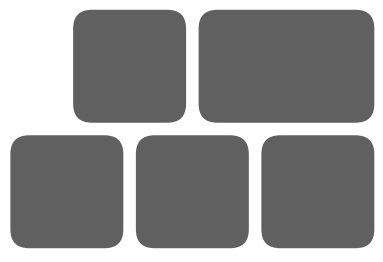
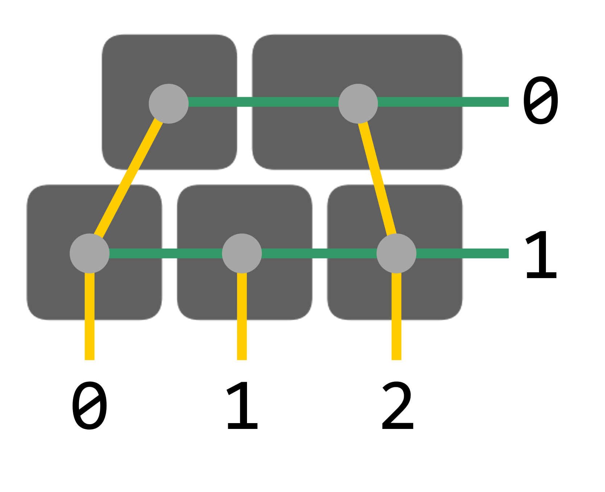

With heatmaps you can track the key usage and optimise keyboard layouts for efficiency and comfort.
Assuming your keyboard looks like this ...
create a 2D Python-like list with row_max = 2 rows and col_max + 1 = 4 columns. Each entry in the array specifies the key width in units u, with the following exceptions:
For your keyboard above, that is
[[0.5, 1.0, 1.5, 0.0],
[0.0, 1.0, 1.0, 1.0]]
After entering the keymap into the textbox on the bottom left and clicking the Register button, you will get a random 64 digit hash. Save that one for the next step.
Download heatmap.c and heatmap.h into the folder with your keymap.c. Include it into the build process by adding to the rules.mk
SRC += heatmap.c
Assuming your keyboard is wired like this ...
personalise heatmap.h as follows
USERHASH from step 1PHYSICAL_ROWS to 2 and PHYSICAL_COLS to 3, as per the maximum keyboard dimensions
transform_row[PHYSICAL_ROWS][PHYSICAL_COLS] = { \
{0, 0, -1}, \
{1, 1, 1}, \
};
transform_col[PHYSICAL_ROWS][PHYSICAL_COLS] = { \
{0, 2, -1}, \
{0, 1, 2}, \
};
In keymap.c, #include "heatmap.h" and create a custom keycode (e.g. KC_HEAT) for printing out the keycounts in the next step. Then add the following code snippet to the process_record_user function
// Functions for heatmap generation
if (record->event.pressed) {
// Update key counter for heatmap
increment_keycount(record);
// Dump keycount array as a Python list
if (keycode == KC_HEAT)
dump_keycount();
}
Use this example of keymap.c as a reference. Compile the firmware and flash it.
Everything is straightforward from here
KC_HASH which fills the two fieldsTo view the heatmap without submitting new keycounts, insert only your hash and submit.